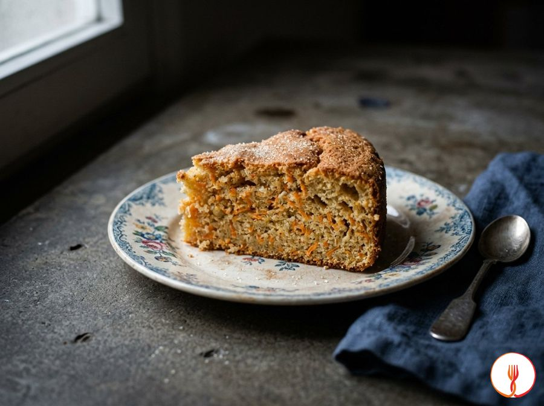

Torta di carote soffice
Adatto ai bambiniTorta morbida con carote e mandorle.
Ingredienti
- Carote (pulite e grattugiate finemente)300 g
- Farina 00200 g
- Mandorle pelate (ridotte in farina)80 g
- Uova medie3 pezzi
- Zucchero di canna80 g
- Olio di semi di girasole80 ml
- Lievito per dolci16 g
Allergeni
Frutta a guscio, Glutine, Uova
Procedimento
- Preriscaldare il forno a 175°C in modalità statica e oliare una teglia da 22 cm.
- Lavare, pelare e grattugiare molto finemente le carote; se eccessivamente acquose, strizzarle leggermente tra le mani.
- Tritare le mandorle in un mixer insieme a un cucchiaio dello zucchero previsto, fino a ottenere una polvere finissima per garantire la sicurezza del bambino.
- In una ciotola capiente, montare le uova con il restante zucchero di canna per almeno 5 minuti, fino a ottenere un composto chiaro e voluminoso.
- Aggiungere l'olio di semi a filo, mescolando delicatamente con una frusta a mano.
- Incorporare gradualmente la farina 00 e il lievito setacciati, alternandoli alla farina di mandorle.
- Aggiungere infine le carote grattugiate e mescolare con una spatola con movimenti dal basso verso l'alto per non smontare il composto.
- Versare l'impasto nella teglia e cuocere per 40 minuti, verificando la cottura con uno stecchino al centro della torta.
- Sfornare e lasciare raffreddare completamente prima di tagliare la torta in piccoli pezzi adatti alla presa e alla masticazione del bambino.
Valori nutrizionali (stima)
| Per porzione (98 g) | Per 100 g | |
|---|---|---|
| Energia | 1290 kJ / 309 kcal | 1316 kJ / 315 kcal |
| Proteine | 7.3 g | 7.4 g |
| Carboidrati | 31 g | 32 g |
| di cui zuccheri | 12 g | 12 g |
| Grassi | 16 g | 17 g |
| di cui saturi | 2.1 g | 2.1 g |
| Fibre | 2.9 g | 3.0 g |
| Sale | 0.0 g | 0.0 g |
Valori stimati con l'AI su dati medi CREA / USDA: sono indicativi e non sostituiscono il parere di un medico o di un nutrizionista.
Apri la ricetta nell'app per la lista della spesa, le schede ingredienti e i negozi vicini.
Scarica su Google Play